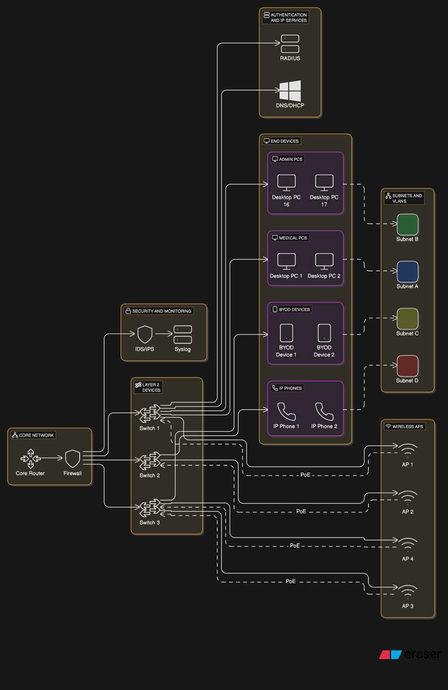

Summit Care Medical Clinic Cyber Threat Analysis & Risk Assessment
A complete rebranded security portfolio document combining the Summit Care healthcare network blueprint with the prior cyber threat analysis project. This report presents a realistic, sanitized assessment of penetration testing, vulnerability management, HIPAA-aware controls, third-party risk, audit evidence, incident response, and remediation planning for a mock medical clinic network.
Table Of Contents
Security Assessment Summary For Reviewers
This master report reframes the existing Summit Care Medical Clinic network architecture into a cybersecurity assessment deliverable. The goal is to show the full security workflow: understanding the business environment, identifying critical healthcare assets, testing realistic attack paths, ranking risk, recommending controls, documenting HIPAA-aware safeguards, and preparing the organization for continuous improvement.
Summit Care is a fictionalized healthcare clinic used to protect real client identities while preserving the technical substance of infrastructure and security work. The environment includes segmented clinical, administrative, billing, voice, wireless, and guest networks; Microsoft identity services; endpoint standards; network monitoring; backup planning; and hybrid cloud collaboration through Microsoft 365 and Entra-connected services.
Scope, Assumptions, And Rules Of Engagement
The assessment was modeled as an authorized internal security review for a small healthcare office preparing for stronger network governance and HIPAA Security Rule alignment. Testing scenarios are written as controlled simulations and sanitized examples, not instructions for unauthorized activity.
In Scope
- Clinical systems, EMR-facing servers, billing applications, admin workstations, and shared services.
- Firewall rules, VLAN segmentation, wireless access, VPN access, DNS, DHCP, AD, NPS/RADIUS, and endpoint posture.
- HIPAA Security Rule safeguards, NIST CSF 2.0 mapping, incident response, backup readiness, and third-party risk.
Out Of Scope
- Unsafe production exploitation, destructive testing, denial-of-service activity, and live PHI exposure.
- Unapproved password harvesting, persistence deployment, or changes to patient-care systems during business hours.
- Real patient names, production credentials, public IP addresses, vendor secrets, or client-identifying data.
| Engagement Area | Purpose | Representative Output |
|---|---|---|
| Risk Assessment | Identify threats, vulnerabilities, likelihood, impact, and control gaps affecting ePHI and operations. | Risk register, heatmap, remediation priority, executive summary. |
| Penetration Testing | Safely validate whether identified weaknesses can become practical attack paths. | Attack narrative, proof summaries, screenshots or logs in sanitized form, retest results. |
| Compliance Review | Map controls to HIPAA administrative, physical, and technical safeguards. | Safeguard matrix, policy gaps, audit evidence checklist. |
| Third-Party Audit | Assess vendors supporting EMR, billing, cloud storage, VoIP, remote support, and managed services. | Vendor risk scores, contract/security questionnaire notes, corrective action tracking. |
Healthcare Network Security Context
Summit Care's mock environment represents a small but realistic medical clinic: clinicians need fast access to patient records, billing staff handle financial workflows, administrators manage scheduling and documents, and IT must protect the network without slowing down patient care.

Figure 1. Existing Summit Care logical network material reused as the network context for this security assessment.
Representative Segmentation Model
| Segment | Example Subnet | Primary Data / Function | Security Intent |
|---|---|---|---|
| Clinical / EMR | 10.7.10.0/24 | ePHI, EMR access, charting stations | Restrict lateral movement and limit access to authorized clinical roles. |
| Billing / Finance | 10.7.20.0/24 | Claims, payment workflows, financial records | Separate payment and billing workflows from clinical and guest traffic. |
| Administration | 10.7.30.0/24 | Scheduling, HR, general office workstations | Apply least privilege and monitor document-sharing activity. |
| Server / Services | 10.7.40.0/24 | AD, DNS, DHCP, NPS/RADIUS, file services, monitoring | Limit management access; require MFA and admin workstation controls. |
| Voice / IoT | 10.7.50.0/24 | VoIP phones, printers, cameras, appliance-like devices | Prevent device networks from reaching ePHI systems except approved paths. |
| Guest Wireless | 10.7.90.0/24 | Patient and visitor internet access | Internet-only access with no route to internal clinical resources. |
How The Cyber Threat Analysis Was Conducted
The methodology combines the older cyber threat analysis workflow with the newer Summit Care infrastructure design. It follows a defensible path: identify assets, scan and validate vulnerabilities, test attack paths safely, rate risk, document control gaps, and verify remediation.
- Discovery and asset inventory: Review diagrams, IP ranges, server roles, endpoint groups, cloud services, access methods, and business processes.
- Threat modeling: Identify likely adversary behaviors affecting a clinic, including phishing, stolen credentials, exposed remote access, unpatched services, ransomware, and vendor compromise.
- Vulnerability assessment: Use Nmap, Nessus/OpenVAS-style scanning, configuration review, log review, and manual validation to reduce false positives.
- Controlled penetration testing: Simulate external, internal, wireless, web application, and privileged-user scenarios without exposing real PHI or disrupting care.
- Risk rating: Score each finding by likelihood, business impact, data sensitivity, exploitability, and compensating controls.
- Remediation and retest: Assign owners, set timelines, validate fixes, and document remaining risk accepted by leadership.
Tools Represented
Nmap, Wireshark, Burp Suite, Metasploit in a lab context, Nessus/OpenVAS-style scanners, PowerShell, Python, firewall logs, Windows Event logs, and Microsoft security reporting.
Frameworks Represented
NIST CSF 2.0, HIPAA Security Rule safeguards, OWASP testing concepts, CIS-style hardening practices, and internal risk scoring.
Evidence Types
Asset list, scope memo, scan summaries, sanitized proof screenshots, firewall exports, policy review notes, vendor questionnaires, and retest logs.
Critical Systems, Data Types, And Business Impact
Security decisions were prioritized around the systems that store, process, or provide access to ePHI, billing records, user identities, network controls, and recovery data.
| Asset / System | Data Type | Business Impact | Baseline Control Requirement |
|---|---|---|---|
| EMR Application / Clinical Workstations | ePHI, patient charts, encounter notes | Critical: direct patient-care disruption and reportable privacy risk. | MFA where supported, role-based access, session timeout, endpoint protection, audit logging. |
| Billing System / Claims Workflow | Financial records, claim identifiers, limited PHI | High: revenue disruption, fraud exposure, privacy concern. | Web hardening, database least privilege, secure coding, access review, encrypted backups. |
| Active Directory / Entra Identity | User identities, groups, access policy | Critical: compromise can enable broad lateral movement. | MFA, privileged access workstations, tiered admin groups, lockout policy, audit logging. |
| Firewall, Switches, Wireless Controllers | Network policy, routes, VLAN enforcement | High: misconfiguration can expose internal systems. | Centralized config backup, named admin accounts, secure management VLAN, change control. |
| NAS / Backup Repository | System backups, file shares, configuration exports | Critical: ransomware resilience depends on backup integrity. | Immutable or offline copy, restricted admin, encryption, restore testing, separate credentials. |
| VoIP, Printers, Cameras, IoT | Operational metadata, possible documents or call records | Medium: pivot risk and privacy-adjacent exposure. | Separate VLAN, default credential removal, firmware updates, egress limits. |
Realistic Cyber Threat Scenarios For A Clinic Network
The highest-value risks were not treated as isolated technical bugs. They were analyzed as business scenarios that could affect patient care, PHI confidentiality, billing operations, staff productivity, and regulatory posture.
Scenario A: Credential Theft To EMR Access High
A targeted phishing email captures a staff password. Without MFA and conditional access, the attacker attempts cloud email access, searches messages for vendor portals, and uses the same identity against VPN or remote desktop services.
Controls: MFA, phishing-resistant training, impossible-travel alerts, passwordless options, log review, and user access reviews.
Scenario B: Ransomware Through Unpatched Endpoint Critical
An outdated workstation or exposed service allows code execution. The attacker disables local defenses, moves to file shares, encrypts operational data, and pressures the clinic during patient-care hours.
Controls: EDR, patch SLAs, application control, network segmentation, restricted admin rights, immutable backup copies, restore testing.
Scenario C: Billing Portal SQL Injection High
A vulnerable billing interface accepts unsafe input and allows unauthorized database queries in a test environment. The potential impact includes claim record exposure, financial tampering, and compliance investigation.
Controls: Parameterized queries, secure SDLC, WAF rules, database least privilege, code review, and web application retesting.
Scenario D: Vendor Remote Support Misuse Medium
A third-party support tool has broad access, inconsistent MFA, or unclear logging. If a vendor account is compromised, the clinic may inherit the attacker path.
Controls: Vendor MFA attestation, named accounts, just-in-time access, session recording, contract security clauses, annual review.
Controlled Testing Narrative And Findings
Penetration testing was positioned as validation of risk, not a hunt for dramatic exploits. The test plan measured whether Summit Care's controls could prevent, detect, and contain realistic attack paths.
Testing Phases
| Phase | Representative Activity | Security Skill Demonstrated |
|---|---|---|
| Reconnaissance | Mapped exposed services, email patterns, DNS records, VPN entry points, and internal subnets after authorization. | Scope control, OSINT discipline, network enumeration, evidence capture. |
| Vulnerability Validation | Compared scan findings against service versions, patch levels, configuration files, and manual checks. | False-positive reduction, CVSS interpretation, secure configuration review. |
| Web Application Testing | Reviewed billing and portal workflows for injection risk, authentication weakness, session handling, and error leakage. | OWASP-style testing, Burp proxy workflow, remediation documentation. |
| Internal Segmentation | Attempted controlled reachability from admin, billing, clinical, IoT, and guest networks to verify firewall intent. | VLAN/ACL testing, least-privilege validation, lateral movement analysis. |
| Privileged Access Review | Reviewed local admin membership, domain admin exposure, shared credentials, service accounts, and remote management paths. | Identity risk analysis, privilege tiering, Windows security review. |
Representative Penetration Test Findings
PT-01: Domain Admin Exposure On Workstations Critical
Observation: Administrative credentials were used on general-purpose workstations, increasing the chance that endpoint compromise could become domain compromise.
Recommendation: Implement privileged access workstations, remove standing admin access, rotate admin credentials, and enforce tiered administration.
PT-02: Weak SSH / Network Device Management High
Observation: Network management services were reachable from broader internal segments than required, and older algorithms/default settings were present in the mock review.
Recommendation: Restrict management to a hardened admin VLAN, use named accounts, disable legacy algorithms, and centralize logs.
PT-03: Billing Portal Injection Risk High
Observation: Testing identified unsafe input handling in a simulated billing workflow, creating a path to unauthorized query behavior.
Recommendation: Use parameterized queries, input validation, code review, least-privilege database accounts, and retest before production release.
PT-04: Guest Network Egress And Discovery Noise Medium
Observation: Guest Wi-Fi was logically separate from clinical systems, but excessive outbound freedom and device discovery created unnecessary attack surface.
Recommendation: Enforce client isolation, DNS filtering, rate limits, internet-only routing, and captive portal policy acknowledgement.
Prioritized Vulnerability And Risk Assessment Results
Risks were scored using impact and likelihood, with extra weight added for ePHI, identity systems, patient-care availability, and whether the issue could be chained with another weakness.
| ID | Risk | Impact | Likelihood | Rating | Owner | Remediation |
|---|---|---|---|---|---|---|
| R-01 | Privileged credentials exposed on normal endpoints | 5 | 4 | Critical | IT / Security | Admin tiering, PAWs, LAPS/credential rotation, MFA, monitoring. |
| R-02 | Unpatched EMR-supporting web service | 5 | 3 | High | Systems | Patch SLA, vulnerability scanning, maintenance windows, compensating WAF rules. |
| R-03 | Billing portal injection weakness | 5 | 3 | High | Application / Vendor | Secure coding fix, database least privilege, code review, web retest. |
| R-04 | Remote access policy inconsistent across VPN and cloud tools | 4 | 3 | High | Identity | MFA everywhere, conditional access, device compliance, log alerting. |
| R-05 | Third-party remote support lacks complete audit evidence | 4 | 3 | High | Vendor Management | Vendor questionnaire, MFA proof, BAA review, access expiration, session logging. |
| R-06 | Backup restore testing not fully documented | 5 | 2 | Medium | IT Operations | Quarterly restore test, immutable copy, backup success alerts, runbook update. |
| R-07 | Default or weak SNMP strings on network devices | 3 | 3 | Medium | Network | Disable SNMPv1/v2c where possible, enforce SNMPv3, limit source IPs. |
| R-08 | User phishing susceptibility in finance and scheduling groups | 4 | 3 | High | Security / HR | Targeted training, simulated campaigns, reporting button, MFA, email filtering. |
HIPAA Security Rule And Compliance Facts
The HIPAA Security Rule requires regulated entities to protect electronic protected health information with appropriate administrative, physical, and technical safeguards. For this mock clinic, the practical compliance focus is risk analysis, access control, audit controls, integrity, transmission security, workforce security, contingency planning, and vendor oversight.
| HIPAA Safeguard Area | Summit Care Control Evidence | Risk Assessment Notes |
|---|---|---|
| Administrative Safeguards | Security responsibility assigned, access review process, workforce training, incident response plan, vendor review. | Needs stronger recurring evidence: signed policy acknowledgements, quarterly access reviews, and management acceptance of residual risk. |
| Physical Safeguards | Server/network closet control, UPS protection, workstation placement, visitor separation, device inventory. | Improve checklist evidence for device disposal, physical access review, and environmental controls. |
| Technical Safeguards | Unique user IDs, MFA, role-based access, firewall segmentation, encryption, audit logs, endpoint protection. | Most important gaps are privileged access management, log review cadence, and technical proof of backup recovery. |
| Risk Analysis / Risk Management | Asset inventory, risk register, vulnerability scan summaries, remediation roadmap, retest documentation. | Convert assessment into a living risk register reviewed by leadership each quarter. |
| Business Associate / Vendor Oversight | BAA tracking, vendor access list, remote support review, third-party questionnaire. | Require proof of vendor MFA, breach notice terms, encryption practices, and access termination process. |
Vendor And External Audit Program
Healthcare clinics rely heavily on vendors: EMR platforms, billing services, VoIP providers, MSPs, backup platforms, cloud storage, email security, internet service providers, and remote support tools. Each vendor can become part of the clinic's attack surface.
| Vendor Category | Example Risk | Audit Evidence Requested | Decision |
|---|---|---|---|
| EMR Provider | PHI exposure, uptime dependency, privileged support access. | BAA, SOC 2 or security summary, encryption statement, support access process, breach notification terms. | Monitor |
| Billing / Claims Vendor | Financial data compromise, web application vulnerability, weak support controls. | Secure SDLC statement, vulnerability management proof, MFA attestation, data retention policy. | Remediate |
| Managed IT / Remote Support | Broad admin access, shared accounts, incomplete logging. | Named account list, MFA proof, session logs, access expiration process, background check policy summary. | Restrict |
| Cloud Backup Provider | Backup deletion, account takeover, restore failure. | Immutable backup options, encryption, restore testing logs, admin MFA, data residency statement. | Approve |
Third-Party Audit Checklist
- Confirm whether vendor handles ePHI and whether a Business Associate Agreement is required.
- Require named accounts, MFA, and least-privilege support roles for remote access.
- Review breach notification terms, data retention, encryption, backup, and subcontractor language.
- Track corrective actions, due dates, vendor owner, and risk acceptance decisions.
Routine Security Operations And Evidence Cadence
The older automation and routine auditing content has been converted into an operations model for Summit Care. The point is to make security repeatable: collect logs, check baselines, review access, scan for vulnerabilities, and prove that backups and controls still work.
Daily
Review critical alerts, backup status, endpoint protection status, failed admin logons, and firewall deny spikes.
Weekly
Review vulnerability deltas, firewall changes, high-risk email events, VPN activity, and privileged group changes.
Monthly
Patch servers and network devices, review inactive accounts, validate guest Wi-Fi separation, and export key configs.
Quarterly
Run access recertification, restore-test backups, tabletop incident response, vendor review, and risk register update.
Log Sources To Centralize
| Source | Events Of Interest | Security Value |
|---|---|---|
| Firewall / VPN | Denied traffic, new remote access sessions, geo-anomalies, rule changes. | Detect perimeter attacks, misuse, and segmentation bypass attempts. |
| Active Directory / Entra | Privileged group changes, failed logins, MFA prompts, risky sign-ins. | Detect account compromise and identity drift. |
| Endpoint Protection | Malware blocks, suspicious scripts, disabled agents, isolation events. | Detect ransomware and endpoint compromise early. |
| EMR / Billing Applications | Export activity, failed authentication, abnormal access hours, privilege changes. | Support HIPAA audit controls and privacy investigations. |
Incident Response, Disaster Recovery, And Business Continuity
A security assessment is incomplete unless the organization can respond when a control fails. Summit Care's response model is built around detection, containment, eradication, recovery, communication, and lessons learned.
Ransomware Playbook
Isolate affected VLANs, preserve evidence, disable suspect accounts, validate backup integrity, restore priority services, and notify leadership/compliance.
Lost Device / ePHI Exposure
Confirm encryption and MDM status, remote lock or wipe, assess data involved, document timeline, and trigger privacy review if needed.
Vendor Account Compromise
Disable vendor access, collect session logs, rotate affected credentials, verify systems touched, and require vendor corrective action.
Recovery Priorities
| Priority | Service | Target Recovery Approach |
|---|---|---|
| 1 | Identity, DNS, DHCP, network core | Restore foundational access first; validate clean admin credentials and firewall rules. |
| 2 | EMR and clinical workstations | Restore patient-care operations using verified backups or vendor continuity procedures. |
| 3 | Billing, file shares, printing, voice | Restore operational workflows after clinical systems are stable. |
| 4 | Guest Wi-Fi, nonessential IoT, secondary services | Return lower-priority services after monitoring confirms clean recovery. |
30 / 60 / 90 Day Security Improvement Plan
The roadmap translates findings into practical work that a clinic can actually execute. Immediate actions reduce the most dangerous paths; later actions mature monitoring, governance, and audit evidence.
| Timeline | Actions | Success Evidence |
|---|---|---|
| 0-30 Days | Enforce MFA for remote/cloud access, remove shared admin accounts, patch critical systems, isolate guest Wi-Fi, review vendor access, confirm backup success alerts. | MFA report, patch report, updated firewall rules, vendor account list, backup dashboard export. |
| 31-60 Days | Implement privileged access workstation model, database least privilege, SNMPv3, centralized logging, phishing reporting workflow, and secure configuration baselines. | Admin group review, baseline screenshots, SIEM/log dashboard, phishing test metrics. |
| 61-90 Days | Perform retest, restore-test backups, complete HIPAA safeguard evidence binder, run incident response tabletop, complete third-party risk reviews. | Retest letter, restore test record, tabletop after-action report, completed vendor register. |
| Ongoing | Quarterly vulnerability scans, annual penetration test, monthly access review, continuous monitoring, policy refresh, and leadership risk review. | Recurring audit calendar, risk register updates, board/leadership summary, control exceptions log. |
Evidence Pack, Deliverables, And References
The final security portfolio should include enough evidence for a reviewer to understand the work without exposing live secrets. The items below can be used as a clean index for screenshots, exports, and sanitized technical artifacts.
Recommended Evidence Pack
- Sanitized network diagram and VLAN map.
- Asset inventory and data classification sheet.
- Vulnerability scan summary and false-positive notes.
- Penetration testing scope memo and executive findings.
- Risk register with owners, due dates, and retest status.
- HIPAA safeguard matrix and audit evidence checklist.
- Third-party/vendor risk questionnaire summary.
- Incident response tabletop and backup restore test report.
Key Deliverables Created
- Cyber Threat Analysis and Risk Assessment Master Report.
- Penetration testing narrative and representative findings.
- HIPAA-aware control alignment and compliance evidence plan.
- Third-party audit framework for healthcare vendors.
- 30 / 60 / 90 day remediation roadmap.
- Ongoing monitoring and routine audit cadence.
References Used For Current Compliance Framing
- HHS, The Security Rule, content last reviewed March 19, 2026.
- HHS, Summary of the HIPAA Security Rule.
- HHS, Security Rule Guidance Material.
- NIST, The NIST Cybersecurity Framework (CSF) 2.0, published February 26, 2024.
- NIST, Cybersecurity Framework FAQs, describing the six CSF functions: Govern, Identify, Protect, Detect, Respond, Recover.